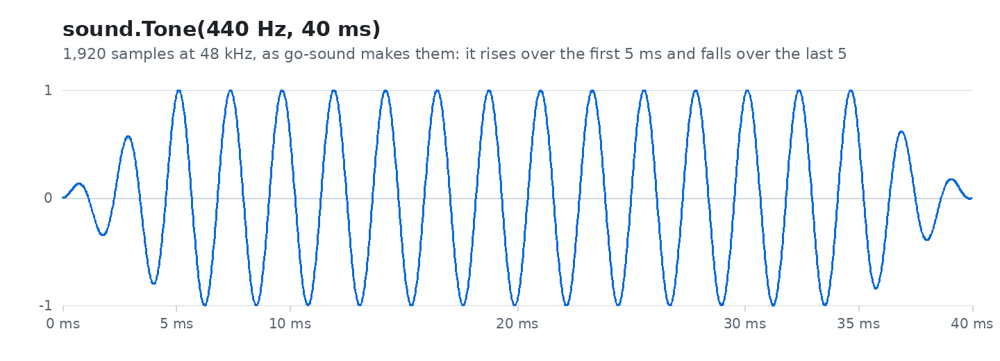

go-sound plays sound from Go programs: beeps, music, the sea, a foghorn. On phones, computers, web pages and the Nintendo 3DS.

A program opens the speakers once, and plays as many sounds at once as it likes: notes it makes itself, or WAV and Ogg files it carries. go-sound mixes them and sends them to each system’s own audio. On a phone it goes quiet when the app leaves the screen.
Pick the line that sounds like you.
| If you… | Read | Time |
|---|---|---|
| are new and want to hear something | 🏴☠️ The quest: the sounds of a harbour, in 6 levels | 40 min |
| want to know how to use it in your program | Using go-sound | 10 min |
| have a sound file and wonder which format | Sound files | 5 min |
| want to know why it is built this way | The design | — |
| want to know what is coming | Roadmap | — |
The menu on the left (or the files in docs/) follows this order.
Start
Use
The project
| Word | What it means |
|---|---|
| Go | A programming language. To try these projects you install it once, from go.dev, and type go run … in a terminal. |
| Terminal | The window where you type commands: Terminal on macOS and Linux, PowerShell on Windows. |
| Repository | A project’s folder of files, kept on GitHub. git clone <address> copies it to your computer. |
| Quest | The tutorial of these docs: short levels, each ending with something that works and an achievement. |
go-sound is one of a family of small projects that work together:
| Project | What it does |
|---|---|
| go-renderer | draws 3D scenes and flat interfaces |
| go-ui | buttons, panels and whole applications |
| go-ui-android | Android apps that look like Android’s own |
| go-sound (this one) | sound and music |
| go-scene-builder | 3D scenes from a flat map |
| go-simulator | simulations that change a scene |
| go-simulator-terrain | ground shaped by rivers |
| go-simulator-climate | weather and biomes |
| go-simulator-flora | forests that grow |
| go-simulator-urban | towns that grow |
| go-simulator-motion | a scene that moves |
| go-3ds | Go on the Nintendo 3DS |
⚠️ All of them are educational experiments, written with an AI assistant and pending review by their author: good for learning and playing, not for production.